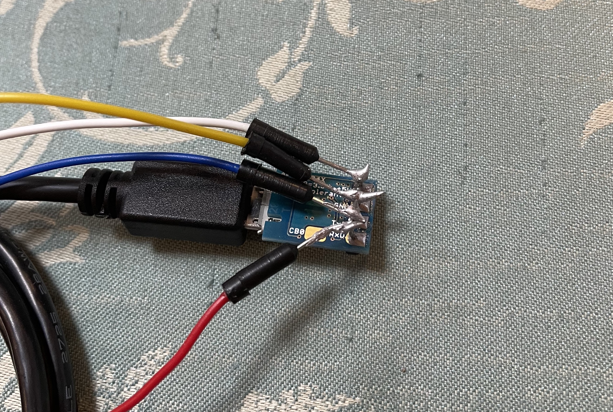
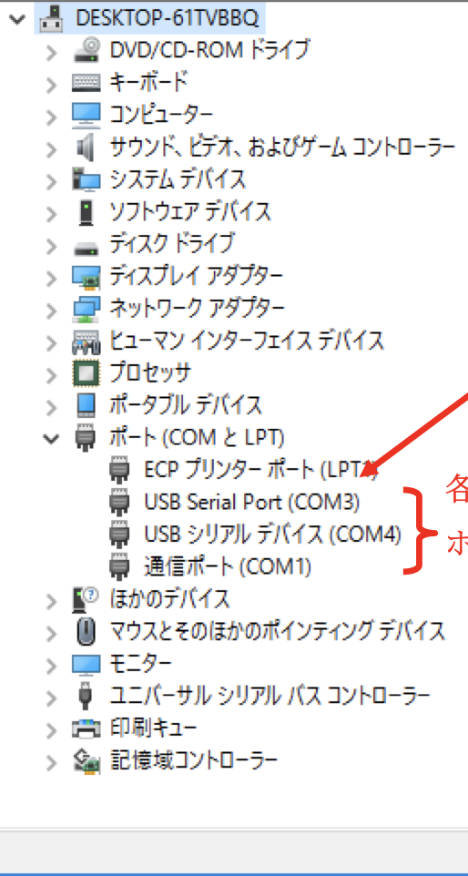
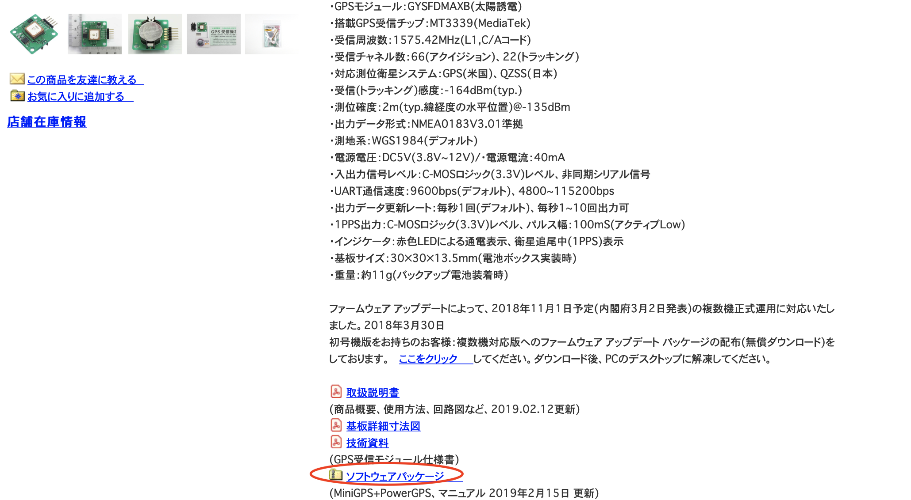
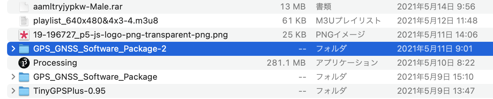
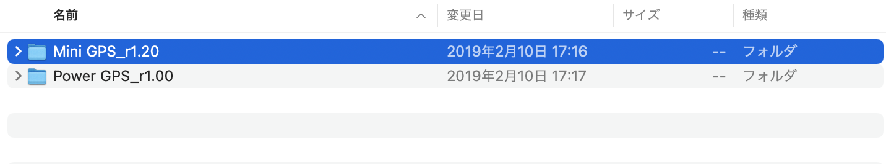
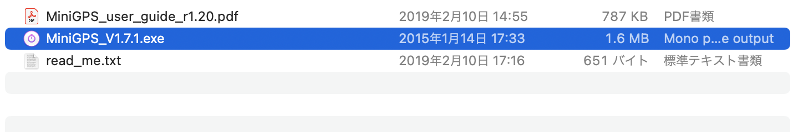
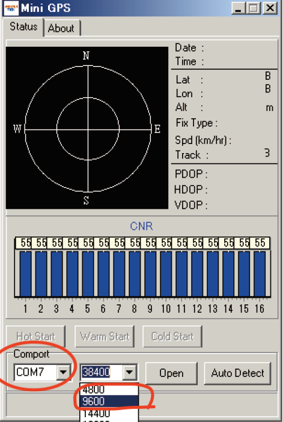
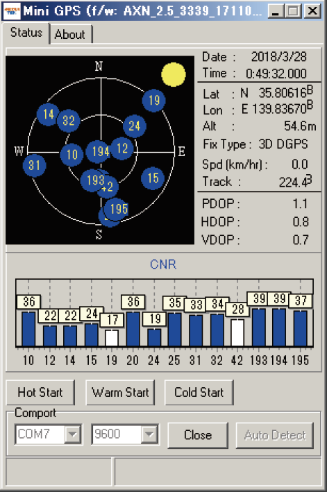
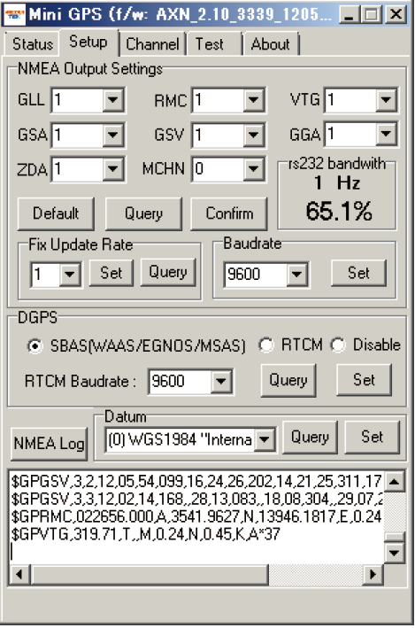

Hello!
そもそも、なぜ高速化が必要なのか。
それは、更新頻度をあげればあげるほど、測定の精度を高めることができるからです。
イメージはこちらの
参考資料
のような感じです。
以上のため、GPSの更新頻度をあげました。
・Windows（Windowsでしかできないから）
・GPS
・USBシリアル変換モジュール

① 変換モジュールに半田付けをする。
※足が短かったためジャンパーワイヤーを足につけた。

②変換モジュールとGPSをブレッドボードを用いて繋げ、そしてUSBをPCへ。

③デバイスマネージャーを開いて、ポートナンバーを確認する。

④先程のGPSのサイトに移動して、ソフトをダウンロード。

⑤ダウンロードしたものを開く。

⑥画像の通り選択。

⑦画像の通り選択。

⑧ソフトを開いたら、赤丸の部分を先程確認したCOMナンバーと9600に変更しopenを選択。

⑨通信が始まるとこのようになります。

⑩最後に、Ctrl + Alt + Sを選択すると上部の表示が増えるため、Setupを選択して任意のレートに変更し終了です。
これでGPSの更新レートが上昇しました。
GPSを使用する際には参考にしてみてください。
Fin.